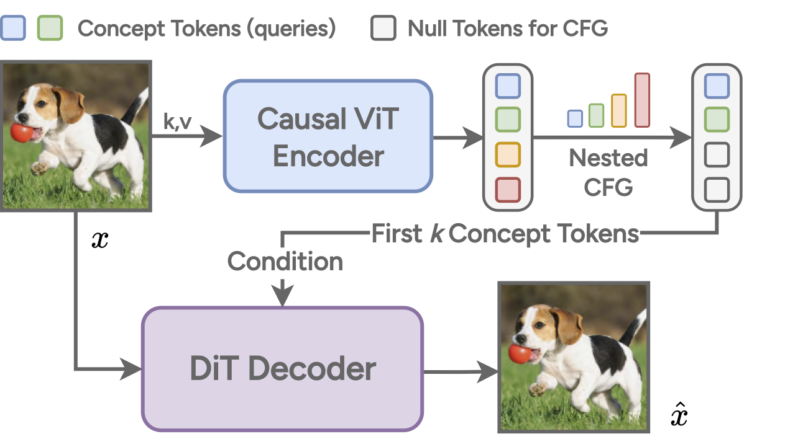
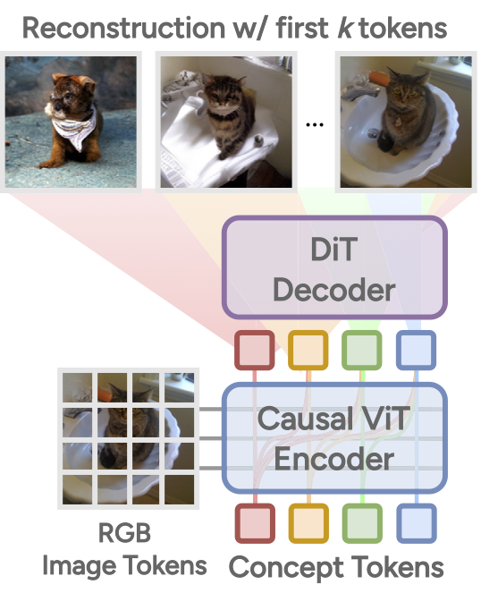

Deep generative models have revolutionized image synthesis, but how we tokenize visual data remains an open question. While classical methods like Principal Component Analysis (PCA) introduced compact, structured representations, modern visual tokenizers—from VQ-VAE to SD-VAE—often prioritize reconstruction fidelity at the cost of interpretability and efficiency.
Can we design a compact, structured tokenizer that retains the benefits of PCA while leveraging modern generative techniques?
Existing methods fail to separate semantics from spectral details, leading to inefficiencies in token usage.
📊 Power Spectrum Analysis (Visual)
This figure illustrates the semantic-spectrum coupling effect by comparing reconstructions from TiTok (top) and our method (bottom) using an increasing number of tokens.
This analysis demonstrates that Semanticist produces a structured latent space where tokens capture high-level semantic meaning first, avoiding spectral artifacts. The below figure gives more comparisons.
Our model introduces a structured 1D causal tokenization framework designed to efficiently encode images into a compact and semantically meaningful latent space. Unlike conventional tokenizers that encode images into a 2D grid of latent vectors, our approach enforces a hierarchical PCA-like structure, where each token progressively refines the image representation in a coarse-to-fine manner.
The encoding process begins with a Causal Vision Transformer (ViT) Encoder, which receives an input image and generates concept tokens in a 1D sequence. Unlike conventional 2D latent spaces, these tokens are ordered causally, ensuring that earlier tokens capture the most salient semantic features, while later tokens refine details.
👉 See the figure below, where the encoder transforms the input image into a structured token sequence.
To enforce a PCA-like hierarchy, we apply a nested classifier-free guidance (CFG) strategy, where later tokens are progressively replaced with a null condition token during training. This forces earlier tokens to prioritize capturing the most critical information, leading to an interpretable, structured representation.
👉 The image above illustrates how nested CFG selectively refines token importance.
📚 This PCA-like structure is mathematically proved in our paper.
A Diffusion Transformer (DiT) Decoder reconstructs the image from these structured latent tokens. Unlike traditional deterministic decoders, our diffusion-based approach naturally follows a spectral autoregressive process, reconstructing images from low to high frequencies. This prevents semantic-spectrum coupling, ensuring that tokens encode high-level meaning instead of low-level artifacts.
👉 The figure below demonstrates how image reconstructions progressively improve as more tokens are used.
Our hierarchical tokenization closely resembles the global precedence effect in human vision, where broader structures are perceived before finer details. This property allows our tokenizer to adaptively reconstruct images with varying numbers of tokens, making it highly flexible for compression, image generation, and recognition tasks.
👉 As shown in the image above, increasing the number of tokens leads to progressively better reconstructions while maintaining structured information.
We validate Semanticist through extensive experiments, demonstrating:
📝 Quantitative Results Table
Like all generative models, our approach could be misused for deepfake creation or content manipulation. We encourage responsible use and propose safeguards to mitigate misuse.
We sincerely appreciate the dedicated support we received from the participants of the human study. We are also grateful to Anlin Zheng and Haochen Wang for helpful suggestions on the design of technical details.
X.W. and B.Z. conceived the study and guided its overall direction and planning. X.W. proposed the original idea of semantically meaningful decomposition for image tokenization. B.Z. developed the theoretical framework for nested CFG and the semantic spectrum coupling effect and conducted the initial feasibility experiments. X.W. further refined the model architecture and scaled the study to ImageNet. B.Z. led the initial draft writing, while X.W. designed the figures and plots. I.E., J.D., and X.Q. provided valuable feedback on the manuscript. All authors contributed critical feedback, shaping the research, analysis, and final manuscript.
Citation: If you find our work useful, please cite us!
@inproceedings{semanticist,
title={``{P}rincipal Components'' Enable A New Language of Images},
author={Wen, Xin and Zhao, Bingchen and Elezi, Ismail and Deng, Jiankang and Qi, Xiaojuan},
booktitle={IEEE/CVF International Conference on Computer Vision (ICCV)},
year={2025}
}